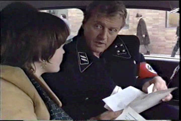
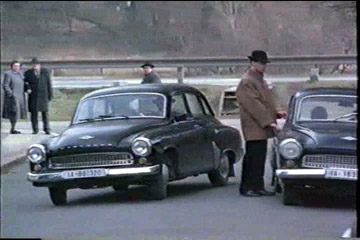
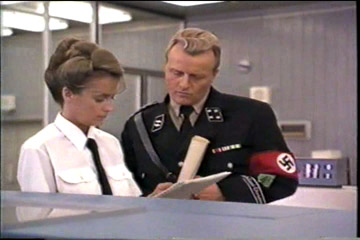
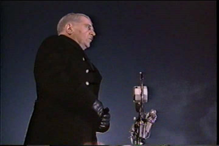
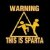

|
 | 1964-et írunk. Németország jó
húsz évvel korábban megnyerte az európai háborút. A normandiai partraszállás kudarcba fulladt.
Roosevelt elnök hallgatott azokra a tanácsadóira, akik ellenezték a háborút Németországgal,
különbékét kötött, és inkább a japánok ellen fordította országa minden erejét. Így született meg
Germánia, az ezeréves náci birodalom, amelynek tiszta, rendes és monumentális fõvárosában az SS
csapatai tartják fenn a rendet, s látják el a belbiztonsági feladatokat. A televízió, a rádió, a
sajtó szigorú ellenõzés alatt marad, s bár a keleti fronton még mindig tart az elhúzódó
partizánháború, a Harmadik Birodalom lelkesen készülõik Adolf Hitler 75. születésnapjára, amelyen
vendégül látja majd az Egyesült Államok elnökét, John Kennedyt. A találkozó fénypontja egy
stratégiai szövetség megkötése lesz, amellyel végre közös erõvel legyõzhetik a még mindig kitartó
Szovjetuniót.
Ilyen világban játszódik a Fatherland
címû film cselekménye. A nyolcvanas években forgatott mû különös, anakronisztikus világot
tár elénk, egy modern Berlint, amelyben SS-katonák járõröznek a Beatles lemezét hirdetõ plakátok
elõtt, Adolf Hitler szobra áll a Kurfürstendammon, Berlin városképét Albert Speer hatalmas építményei uralják, és a Gestapo emberei szürke Wartburggal járnak, ami elég ciki, hiszen az SS-nél
mindenki Mercedest használ. Ez a film még a régi Hollywood terméke, amikor még léteztek
forgatókönyvírók, és megengedték a fantázia használatát. Bár a cselekménybe bõven volna hol
belekötni, de ennek annyi értelme sem lenne, mint a Star Wars ellentmondásait boncolgatni, hiszen
a 75 éves Hitler éppen úgy nem létezett soha, mint Palpatine császár. Amit a filmen látunk, akár
meg is történhetett volna, feltéve, hogy a németek tényleg megnyerik a háborút, és tényleg
kiirtják a zsidókat.
Történetünk elején egy parkban kocogó SS-kadét három furcsa,
bõrkabátos alakot vesz észre, amint egy halottat dobnak a tóba. Kisvártatva a helyszínre érkezik
az SS nyomozócsoportja, March õnagy (Rutger Hauer), az egykori Kriegsmarine-veterán vezetésével.
Nem túl meglepõ módon az ismeretlen férfi gyilkosság áldozata lett, s néhányan követik még a film
során.
Eközben egy buszra való amerikai újságíró érkezik Berlinbe, akiknek Kennedy
elnök látogatása alkalmából a háború óta elõször nyitják meg a határt. Velük érkezik Charlie
(Miranda Richardson), a fiatal újságírónõ, aki itt született, német apától, de édesanyja még
kislányként, a háború elõtt elvitte Amerikába. Magától értetõõn Charlie lesz az, aki mindent
kiderít az elkövetkezõ két órában, de nem kell túl sok sablontól tartani, csak annyi van, hogy a
bonyolultabb cselekményt nem kedvelõk se unják a filmet. Az újságírónõnek egy ismeretlen férfi
titokban egy borítékot ad át a szálloda halljában, rajta egy üzenettel: menjen el egy bizonyos
címre, ott keressen egy bizonyos embert, s kérdezze arról a fényképrõl, ami a borítékban van.
Charlie el is megy, de a keresett férfit holtan találja. A nyomozást itt is March õnagy vezeti, ám
hamarosan a Gestapo mindkét ügyet saját hatáskörbe vonja és államérdekre hivatkozva elveszi az
SS-tõl.
És innen már rendesen bonyolódnak a szálak, hiszen valami nagyon nagy titok lappang
a háttérben, aminek elkendõzése érdekében a Gestapo sorra gyilkolja meg a legrégibb, leghûségesebb
párttagokat, akik valaha mind-mind a zsidók keletre telepítésén dolgoztak. Hamarosan kiderül, mi
az a nagy épület a szállodában átadott fénykép hátterében, és miféle konferencia volt ott 1942-ben
a nemzetiszocialista párt vezetõi számára: ez Wannsee, ahol a "végsõ megoldásról" határoztak.
Végül a nyomozó páros kezébe kerül egy köteg irat, amely részletesen dokumentálja ezt a
"megoldást" fényképekkel, névsorokkal, adatokkal. Kérdés, el tudják-e juttatni az aktákat Kennedy
elnökhöz, mielõt kezet fogna az öreg Adolffal a történelmi jelentõségû egyezmény
fölött...
A nácik persze rosszak. De nem mind. Ezek már nem azok a nácik. March õrnagy
például kifejezetten szerethetõ karakter. Csak a Gestapo nem változott.
A
Fatherland nagyon érdekesen teremti meg a háború utáni fiktív Németország képét. Olyasmi, mintha a
nyolcvanas évek NDK-ja keveredett volna a Derrick vagy a
Tetthely hangulatába, egy másik korból ott maradt fekete
egyenruhákkal. Bár vannak benne túlzó tévedések, például eleve nem valószínû hogy az SS-re valaha
is a hétköznapi rendõség feladatait bízták volna, avagy a Beatles lemezeit biztosan nem engedték
volna óriásplakátokon hirdetni, ennek ellenére a miliõ hihetõés valószerû. A dramaturgiát nem
bízták amatõrökre. Biztos vagyok benne, hogy az SS és a Gestapo közötti rivalizáló viszony
megmintázásához alaposan tanulmányozták az A tavasz tizenkét
pillanatát, a hétköznapok, a mellékszereplõk megtervezése elõt pedig kismillió német
krimisorozatot végigültek. Érdekes mellékszál a történelmi háttér, ahogy a háború utáni -
természetesen fiktív - események kibontakoznak a szereplõk elejtett kiszólásaiból, például hogy
Németországnak éppen úgy van atomfegyvere, mint Amerikának, és Angliát az atomfenyegetéssel
késztették megadásra. A képet kicsit rontja, hogy Berlinben hol német, hol angol feliratokat
láthatunk, mikor hogy kívánta a dramaturgia, és néhány szereplõ vaskos német akcentussal beszél,
talán hogy életszerûbben hasson az amerikai nézõ számára. Az egész csak akkor bukik, amikor a
végkifejlethez érünk. Természetesen Kennedy megkapja a holokauszt bizonyítékait, és nem jön létre a
stratégiai szövetség, s emiatt Germánia rövidesen összeomlik. De hogy mitõl?! A valóságban egy
ilyen helyzetben Amerika elnöke feltehetõleg magasról tett volna pár millió halottra, mint ahogy a
valódi történelemben a Szovjetuniónak sem emlegették fel soha a gulágokat a második világháborús
hadisegélyek osztogatása közben, noha Roosevelt mindenrõl tudott. Azonban ha mégis rájött volna a
szenteskedhetnék, a Birodalmat minden bizonnyal nem rengette volna meg, ha az USA mégsem ad
segítséget az oroszok ellen, s pláne nem omlott volna össze ettõl. Arról nem is beszélve, hogy a
holokausztról a valóságban semmiféle írásos bizonyíték nincs, a Wannsee-konferencia jegyzõkönyve
pedig köztudottan hamisítvány.
A Fatherland megtekintését
mindenkinek ajánlom, aki szereti, ha egy film a színészi játéktól kel életre, és nem a számítógép
grafikai kapacitásától. Érdekes gondolatkísérlet a "mi lett volna ha", mostanság a történészek is
egyre gyakrabban játszanak az alternatív történelem építgetésével.
A filmet köszönöm
Gerysamának. Letölthetitek a TBombáról. Sajnos magyar feliratot mindenkinek magának kell vadásznia
hozzá.
Fatherland - A Harmadik
Birodalom
Amerikai
játékfilm, 1992, 01:45
Értékelés: 6/10
| | vissza a fõoldalra |  |
| 1 2 3 4 5 | |  | | | | | | | | | | | | | | | | | | 

|
| | | | 1 2 3 4 5 |  |
|


túraszervezõ
túra-rss
mi ez?

legjobbak
legolvasottabbak
tartalomjegyzék
rss feed

AboryM
Caesar
Count Grishnackh
cscsabi
eürdüngh
Feki
GyalogKakukk
Ishukone
Kadzseszka
LACI1993
Mini
Muska
Rommel
Segi
Takezó
tommylee
vikcee
|